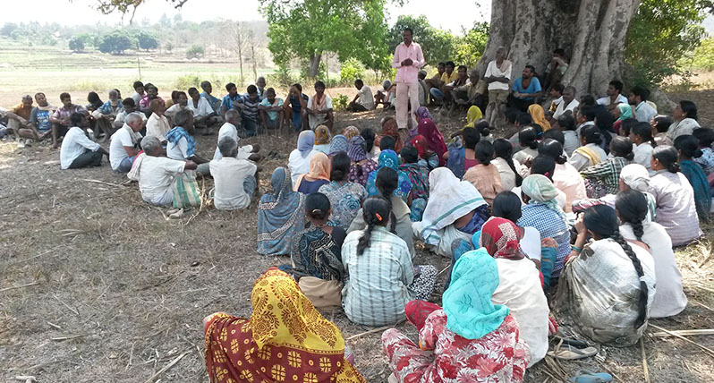

Right to Employment
Jagruti facilitated the implementation of Mahatma Gandhi National Rural Employment Guarantee Act (MGNREGA), a central government act which gives a hundred days of guaranteed employment to every family in rural area.
Jagruti team organized the community in 43 villages to procure job cards, apply for jobs, and get wages.
This gave an opportunity for the village women to enter panchayaths, talk in front of the officials and stake their claims for their rights. 2116 labourers were stopped from migrating and given jobs in their own villages. More than 1500 labourers were benefitted from these jobs during the drought hit period of 2014 - 2016 and earned Rs.30,000 per family. This money was utilized for construction of toilets, building their homes and education of children. 76 lakes have been desilted and reconstructed with an approximate cost of 3 crores of which 60% has gone to the community.
Desilting of lake through MGNREGA.

Team leader Ashok explaining as to why we need to be organized.

Ready to go to the lake for the desilting.